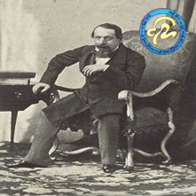

Forums galactiques > Assemblée Galactique : diplomatie officielle > Que de questions.
Pages : 1
| Kooshoku Respect diplomatique : 156 20/05 ETU 13:32  | Score : 10 Détails (Allez voir http://www.apocalypsis.org/2/assemblee/viewtopic.php?id=2915&forumpage=1&page=3
C’est le point de départ ;). Merci de Mp pour prévenir si mettre ça ici c’était utile ou non) Sur le pont d’un vaisseau progressant lentement et silencieusement au dessus de l’océan de Bipolaria, La prêtresse Kooshoku se ressource, laissant les vents et les embruns la rafraîchir. Son A-Cont annonce d’une voix robotisée : « Prêtresse, un sujet surveillé vient de recevoir une réponse » Celle-ci cesse de se perdre dans ses pensées et répond calmement, tout en se retournant et s’adossant à la rambarde : « Affichage. Et changement de cap, je retourne au port. Veuillez prévenir le Cdt Coemgen du message que j’avais envoyé, et de la réponse que je vous formulerais. » Le vent tourne, Kooshoku se retrouve dans l’ombre, suite au changement de cap du vaisseau. Dans cette ombre, un écran holographique s’affiche face à elle, rendant compte de la réponse de Nute Gunray. Elle reprend, disant au A-Cont : « Préparez une recherche sur ce « Marxisme » pour mon retour, Enregistrement. » Aussitôt un réticule s’active et cadre la jeune Kooshoku. « Commerçant, je ne vais pas me cacher, c’était d’ailleurs certainement une erreur de ma part. Je vous répondrais brièvement : Je me prend pour une personne responsable de mon peuple, et considère que je dois comme chaque commandant prévoir les risques qu’encourent les choix d’autres commandants, lorsque l’échelle galactique est concernée. Je suis surprise d’une telle réaction dès lors que vos idées sont remises en question. Sachez que les miennes le sont sans cesse, et que tant que deux êtres distincts dans cet univers existeront, ils opposeront des idées et des avis. Nous considérons que votre réponse est une provocation à laquelle nous ne répliquerons que calmement, et via ces messages. Evidemment, non, nous ne pouvons croire que chaque commandant qui précise qu’il agit pour le bien de la galaxie est en phase de le faire. Vous répondrez certainement « Mais nous ne mentons pas », Et cela ne ferait qu’aller dans le sens de ce que je tente d’expliquer. Rien ne nous confirme votre bonne volonté, tout comme rien ne vous confirme la notre, ni celle de quiconque vivant en Espérance, si nous ne le connaissons pas un minimum. Quelle jalousie pourrions nous avoir dans un questionnaire qui, au contraire, nous avantagerait pour le commerce avec des membres de la guilde ? Nous constatons simplement le fait qu’il puisse engendrer, de par sa recherche de renseignements et de réponse à des besoins d’importance non vitale. Qui plus est, la présence de commerçants qui ne tiendront simplement pas compte des résultats faussera les choix effectués suite à ce questionnaire. Conflits commerciaux, concurrence et chaos ne sont pas à écarter de l’avenir. Une solution serait de ne pas communiquer ces résultats, mais cela ne pourrait que rendre ces réponses profitables à peu d’êtres. Dans les deux cas, des craintes existent donc. Certes les guildéens n’engendrent plus autant de bénéfices, énormes comme vous disiez à l’instant, Autrement dit, vous dites agir pour le bien de tous, mais avant tout des guildéens. Cependant je crois que leur puissance n’est pas pour autant, depuis les récents événements, moindre que les membres d’autres philosophies (Alliance, Fédération). J’espère que chaque être d’Espérance s’en rend compte, et j’espère que dans cet univers de réactions et de confrontations, vous savez mesurer les risques de tels projets. J’ai, en faisant des recherches sur l’ancien monde, découvert une citation intéressante : « Au pays des aveugles, le borgne est roi ». Appliquez la à la lettre dans notre univers et vous comprendrez l’avantage certain que vous obtenez. Que votre réaction vise à aider les autres ou à profiter de cette rupture de communications commerciales avec les autres factions que la Guilde, il existera très certainement des réactions dangereuses. Je vais répondre, ici même, malgré tout, à vos questions. Libre à vous de voir si je mens ou non, et de comprendre le choix de la réponse : 1) A. Quel fut ou que furent votre ou vos dernier(s) achat(s) en date, en matière de ressources ? Notre dernier achat était de la nourriture, une ressource capitale pour certaines saisons, mais sachez que nous en refournissons aux vendeurs lorsque notre production est prospère. Nous appelons cela des échanges. B.Combien d’unités en avez-vous demandés ? Suffisamment pour que nous puissions combler une période moins productive. 2) A. Quel fut ou que furent votre ou vos dernier(s) achat(s) en date, en matière de vaisseaux civils ou militaires ? Nous avons acheté des CLA. B. Combien d’unités en avez-vous demandés ? Nous avons pris un nombre dépendant de nos capacités, de nos intentions futures et du respect du choix de répartition de notre argent. Constatez ici des risques de dévoiler nos affaires privées, et donc nous soulevons alors la question suivante : Qui dans la galaxie a répondu à ce questionnaire ? Ses réponses sauront-elles représenter les réels clients ? 3) A. Quelles ressources commandez-vous le plus souvent ? J’aurais la même réponse. B. Quel est, en général, le prix que l’on vous impose par unités ? Ce prix dépend de la contrebande, dans les conditions actuelles, nous ne pourrons donner de résultat précis. 4) A. Quels vaisseaux civils ou militaires commandez-vous le plus souvent ? Des unités défensives, tels que les CLI et CLA B. Quel est, en général, le prix que l’on vous impose par unités ? Ce prix dépend de la contrebande, dans les conditions actuelles, nous ne pourrons donner de résultat précis. 5) A. Que gagnez vous en ressources, chaque jour ? (Leems, Métaux, Energies, Diamants) Cette question est généralement de secret économique. Sachez que des espions ont souvent le devoir d’y répondre, pourquoi ne pas, en voulant aider la galaxie, leur proposer des emplois. B. Agrandissez-vous chaque jour votre flotte de vaisseaux civiles et militaires ? Cette réponse offre des informations militaires de haute importance. C. Si oui a la précédente question, prière d’indiquer ici les types de vaisseaux que vous avez produit récemment et, si possible, leur quantité. Même réponse 6) Quelles ont étés les remises les plus intéressantes que l’on vous ait fait dernièrement, par rapport aux prix de la contrebande : 1%, 5%, 10%, 15%, 20%, etc.… ? (Si autres, prière de l’indiquer). Sachez que il nous arrive d’obtenir des offres où aucun prix n’existe. Nous en faisons de même pour nos services de surveillance. J’appelle cela de l’entraide, du partage. 7) A. Quel est, en gros, votre budget pour un achat en matière de ressources ? Celui-ci dépend évidemment de notre commerce avec les membres de la guilde, et de nos revenus quotidiens. B. Quel est, en gros, votre budget pour un achat en matière de vaisseaux civils et militaires ? Même réponse. 8) A. Vous êtes plus intéressé par, ou avez plus besoin de : vendre ou acheter des ressources ? Nous avons plus besoin de vendre des ressources si nous désirons augmenter nos flottes, nous avons plus besoin de vendre des ressources, si étrangement nous désirons acheter des ressources. Il a toujours été clair que les ressources se vendaient le plus souvent, pour des membres non guildéens. B. Vous êtes plus intéressé par, ou avez plus besoin de : vendre ou acheter des vaisseaux civils et militaires ? Je serais surpris de voir qu’un commandant vende plus de ressources qu’il achète. A moins qu’il désire profiter du prix de cette unité à la contrebande ou à la production. 9) Avez-vous un marchand attitré ? (Si oui, vous n’êtes pas obligé d'indiquer son nom.) Nous avons des contacts avec des alliés, ou des personnes de confiance et prêtes à aider. 10) À quand remonte votre ou vos dernier(s) achat(s) ? Ils remontent à la dernière guerre. 11) A. Préférez-vous acheter aux Guildéens, aux Alliantistes, aux Fédérés ou cela n’a pas d’importance ? Quelle importance. 12) A. Préférez-vous vendre aux Guildéens, aux Alliantistes, aux Fédérés ou cela n’a pas d’importance ? B. Si préférence il y a, pourquoi cette préférence ? 13) A. Si acheteurs il y a, qu’aimez-vous en général chez eux ? Le fait qu’il va pouvoir évoluer. B. Si vendeurs il y a, qu’aimez vous en général chez eux ? Le fait qu’il nous aide. 14) A. Au plus profond de vous-même, portez-vous une attention particulière à la position politique de votre ou vos vendeur(s) ou acheteur(s) ? Evidemment, le but du commerce est pour nous d’améliorer notre situation et celle de nos contacts, et non de nous perfectionner quitte à permettre à un ennemi d’en profiter également. 15) A. Préférez-vous assurer le transport de marchandises lors d’achats ? (Si oui, expliquez pourquoi) Nous ne sommes pas des guildéens, nous ne pouvons assurer des transports si perfectionnés. B. Préférez-vous assurer le transport de marchandises lors de ventes ? (Si oui, expliquez pourquoi) Même réponse. 16) Quel serait, selon-vous, le vendeur idéal ? Si déjà vente il y a. 17) Quel serait, selon vous, l’acheteur idéal ? Un allié dans le besoin, afin d’assurer son peuple à une meilleure situation. Je crains cependant que dans ce cas on ne puisse le qualifier d’acheteur mais de destinataire. Cdt Nute Gunray, j’espère que vous saurez interpréter et exploiter ces réponses. Je vous en fait cadeau et n’attend pas une réception d’argent, hum, l’auriez vous fait, de toute façon ? Evidemment je ne refuserais pas une proposition qui me sera transmise. Voyez comme il est possible de grandir sans réelle raison, hormis avoir répondu à vos questions. Être payé pour une situation commerciale et diplomatique, bien étrange récompense. » A l’horizon se dessine une immense architecture grandissante, d’immenses vagues défilent sous le vaisseau et celui-ci, rasant l’océan, brise et envoie dans les airs de scintillants embruns. Kooshoku arrive à la capitale. D’un geste naturel, la prêtresse se retourne et laisse s’esquisser une once de plaisir sur son jeune visage. « Voyez, commandants, ce que nous cherchons avant tout à préserver. Peu importe la manière, ces instants n’ont aucun prix. Déconnection.» -Tilt- | ||
| Helios Respect diplomatique : 912 20/05 ETU 16:18 | Score : 5 Détails Que de réponses...
Quel scandale en effet, que de lancer un questionnaire de consommation, quelle honte de chercher à connaitre les besoins et les envies des commandants de cette galaxie, pour mieux leur apporter ce dont ils ont besoin! Cela va engendrer de la concurrence et des guerres? Pour ce qui est des guerres, bien que je m'en moque complètement tant qu'elles ne me touchent pas et permettent le profit, je ne vois pas pourquoi il y en aurat plus. En quoi un sondage provoquerait des guerres? Cela va engendrer de la concurrence? Euh...ah, pourquoi? Au contraire, cela va permettre de l'éliminer, puisque le commandant Nute sera en possession d'informations pour mieux répondre aux besoins de chacun, et aura donc une longueur d'avance sur les concurrents. Non, mais, le but de tout marchand qui se respecte est quand même d'obtenir un monopole et de ne pas avoir de concurrents! C'est vrai quoi... Si chacun est en mesure de voir ses besoins satisfaits plus vite et mieux, c'est forcément dans leur intérêt. Après est-ce que le commandant Nute en tire un intérêt, je l'espère, puisqu'il rémunère ceux qui participent à ce sondage. C'est donc bien dans l'intérêt commun, tout le monde y gagne : les participants car ils touchent plusieurs milliards pour ce faire et seront à l'avenir servis au plus près de leurs besoins, et Nute, car il récupère des informations intéressantes pour son commerce. Et par ailleurs il compte communiquer ces informations aux diplomates (contre une compensation je suppose) : la première grande enquête de consommation des ménages a eu lieu! Nous devrions le remercier pour cette brillante idée! "Voyez, commandants, ce que nous cherchons avant tout à préserver. Peu importe la manière, ces instants n’ont aucun prix." Vous avez raison. En revanche, pour tout le reste il y a la GICA-Card/Mastercard. | ||
| Kooshoku Respect diplomatique : 156 20/05 ETU 16:58 | Score : 2 Détails Je crains Cdt Helios que vous ne répondez pas au problème soulevé.
Ce n’est ni une honte, ni un scandale. C’est un choix et chaque commandant est apte à choisir si il doit y répondre ou non. Pour ce qui concerne la concurrence, et des guerres, c’est également une évidence. Sachez que guerre ne signifie pas obligatoirement combat ionique, invasions etc., et qu’elle sait prendre diverses autres formes. La concurrence existera tant que chaque guildien n’en profitera pas autant ou que d'autres en voudront plus, cela aussi est évident. Il n’est pas si simple de vaincre ses principaux adversaires, que cela soit clair, ça ne passe jamais innaperçu. « Si chacun est en mesure de voir ses besoins satisfaits plus vite et mieux, c'est forcément dans leur intérêt. » Vous confirmez vous-mêmes mes paroles, nous ne seront certes pas perdant, nous, simples clients. Sachez qu’avant d’être des clients ou des cibles de questionnaire, nous sommes avant tout des êtres à part entière. Et cela, je crains que plusieurs créatures de cette galaxie l’ignorent. « C'est donc bien dans l'intérêt commun, tout le monde y gagne » Ici vous vous méprenez, c’est dans l’intérêt des participants, et de l’originaire. Cela pousse à participer, et cela n’est aucunement bénéfique aux autres. Que l’on communique ce message aux diplomates ou à quiconque n’a aucune importance dans mes précédentes paroles. Je crains que votre GICA-Card/Mastercard ne serve qu’à vos fidèles, et ceux qui partagent vos idées. Et je doute qu’elle serve à grand-chose sur bien des planètes qui savent depuis toujours s’en passer. Libre à vous de faire ce que bon vous semble pour vos affaires, tant que cela ne dérange pas une autre masse de la population galactique. J’espère que vous saurez comprendre d’autres points de vue que les votre. Je l’espère. | ||
| Erold Savostos. Respect diplomatique : 138  20/05 ETU 17:24 | Score : 0 Détails
HRP// Mauvais topique, pardonnez-moi.//HRP | ||
| Nute Gunray Respect diplomatique : 32  20/05 ETU 17:25 | Score : 3 Détails Pourquoi, commandant Kooshoku, chercher des problèmes là où il n’y en a pas ?
Comme la très justement fait remarqué le commandant Hélios, ce questionnaire a été créé pour le bien de tous. Comprenez, cher collègue, que nous devons, en tant que Guildéen, répondre au mieux aux exigeantes de nos clients. Il est indispensable que nos confrères Alliantistes et Fédérés soient correctement servis, qu’ils aient un service irréprochable. Connaissez-vous l’expression : « Chez nous, le client est roi ! » ?? Eh bien c’est justement ce que nous essayons de faire en lançant cette étude de marché qui, après en avoir tiré des résultats, nous permettra de mieux comprendre les besoins, désirs et nécessitées de tous les commandants de cette galaxie. N’a-t-on pas le droit d’améliorer la qualité de vie de nos clients et amis ? N’a-t-on pas le droit de faire en sorte qu’ils puissent se développer et s’étendre sans avoir à connaître le manque et la faim ? Si, bien sur, nous le devons….c’est une nécessité. Une nécessité pour le triomphe des plus faibles et des plus pauvres. Aussi, je vous le dit : remettre en cause ce questionnaire revient a remettre en cause la FACOD, dirigé par le Baron, qui a voulut, tout comme la GICA, instauré une aide aux jeunes commandants pour les aider dans leur développement. | ||
| Helios Respect diplomatique : 912 20/05 ETU 18:06 | Score : 3 Détails Il me semblait commandant Kooshoku, que c'était justement vous qui n'étiez pas d'accord avec d'autres opinions ou façons de faire. En vous écoutant, j'avais cru que vous étiez contre ce questionnaire et que vous l'accusiez de mettre en danger toute la galaxie et d'être la future cause de la disparition de toute civilisation...J'avais dû en fait mal vous comprendre.
Plus sérieusement, vous étiez assez critique, mais vous semblez avoir un peu révisé votre position, pour simplement dire que ce ne sera pas bénéfique pour tous : ce qui est vrai, ce le sera pour beaucoup, dont ceux qui ont répondu mais pas pour tous. Mais ce ne sera un mal pour personne en tout cas. Ne vous inquiétez pas, je peux tout à fait comprendre que d'autres pensent autrement ou ne partagent pas mes idées. Je suis conscient que certains ne recherchent pas le profit et l'enrichissement à tout prix. C'est malheureux, mais c'est comme cela, personne ne peut être parfait. Et puis après tout, tant mieux, ça en fait plus pour moi... |
Pages : 1
Forums galactiques > Assemblée Galactique : diplomatie officielle > Que de questions.